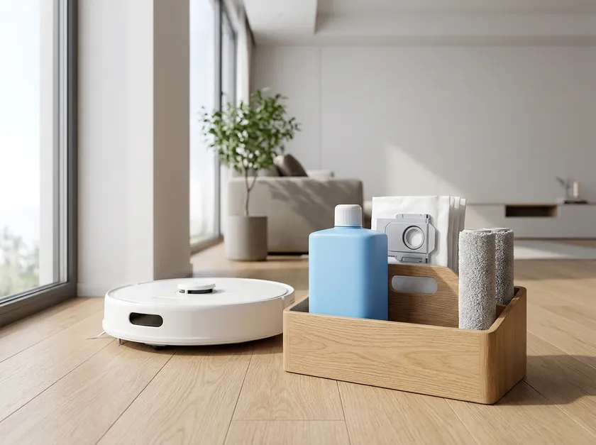
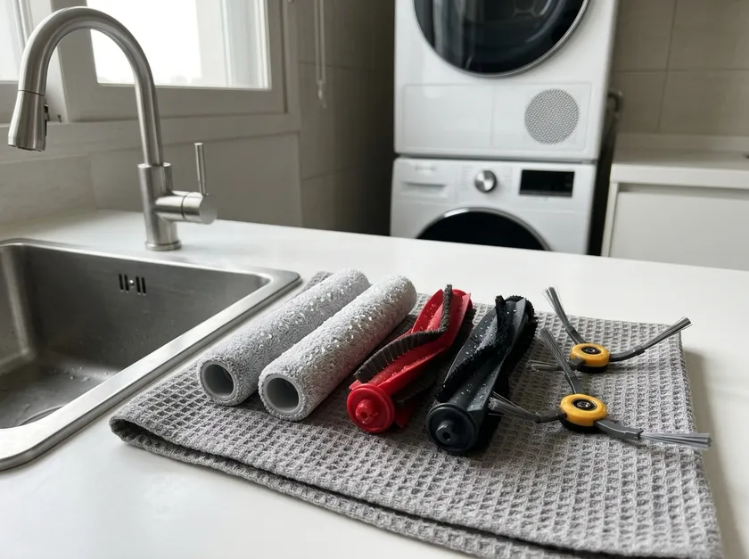
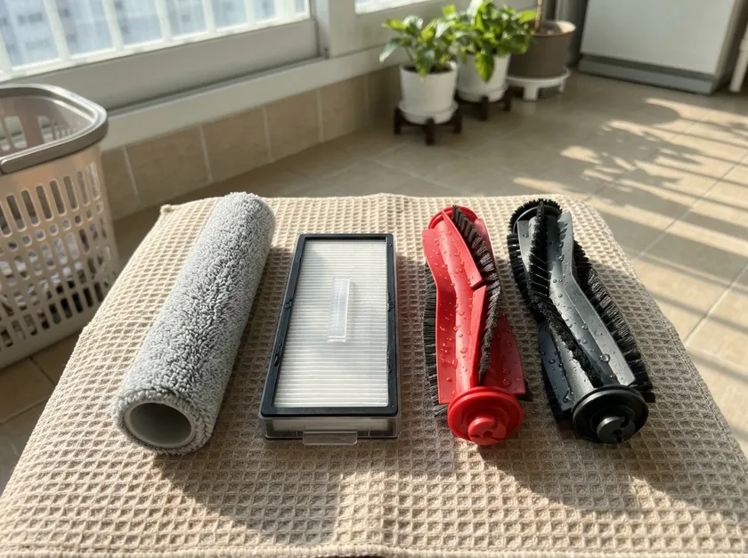
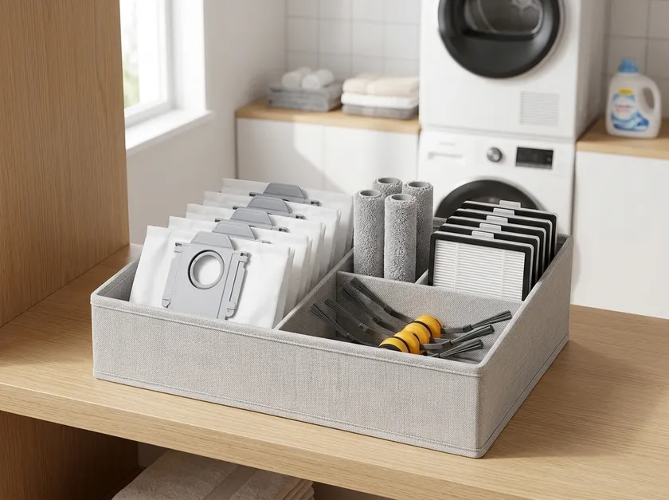

로보락 (Roborock)
로보락 Q Revo Curv 2 Flow 롤러 물걸레 건조와 1년 세트 보관 팁
글·구성: 제이상점 · 기종별 1:1 호환 실물 점검 · 교체 주기 비교표 · 스마트스토어 패키지 안내

핵심 관리 · 선택 체크포인트
- 바닥을 가로지르는 원통형 롤러 물걸레가 탑재된 로보락 Q Revo Curv 2 Flow는 세척 후 롤러 슬리브 안쪽까지 바짝 말려 주는 교대 루틴이 중요합니다.
- 원통형 롤러 슬리브와 레드·블랙 2분할 브러시 동시 점검: Q Revo Curv 2 Flow는 머리카락을 가운데로 모아 흡입하는 2분할 원추형 브러시와 긴 롤러 물걸레 튜브가 함께 작동합니다.
- 1년 패키지 구성품과 기종별 옵션 확인표: 상세페이지에서 세제 포함·미포함 여부와 기간별 세트 구성을 확인해 우리 집 청소 빈도에 맞는 옵션을 선택해 보세요.
- 도크 옆 수납 캐디와 세탁실 상판 매트로 완성하는 5분 점검: 마른 예비 롤러와 필터, 더스트백은 도크 옆 원목 캐디에 세워 두고, 방금 뺀 젖은 롤러와 필터는 세탁실 상판 매트에 올려 말리면 동선이 겹치지 않고 깔끔합니다.
- 2분할 메인브러시를 분해·청소한 뒤 다시 끼우는 요령은 듀오디바이드 메인브러시 좌우 방향 확인법에서, 물세척한 필터의 건조 기준은 필터 24시간 그늘 건조 안내에서 살펴보실 수 있습니다.
실물 부품 디테일 · 관리 구성 이미지




부품 규격 · 점검 기준표
| 확인 항목 | 부품·옵션 특징 | 점검·선택 포인트 |
|---|---|---|
| 듀오디바이드 브러시 | 레드·블랙 2분할 원추형 메인브러시 한 쌍 | 중앙 틈새와 양끝 베어링 축의 먼지·털 제거 |
| 원통형 롤러 물걸레 | 그레이 스트라이프 극세사 롤러 슬리브 | 세척 후 통풍 매트에서 속까지 건조하며 여분과 교대 |
| 사이드브러시·필터·더스트백 | 곡선형 2발 사이드브러시 + 블랙 프레임 필터 + 더스트백 | 필터 24시간 완전 건조 및 더스트백 슬롯 밀착 장착 |
💡 교체 주기가 겹치는 필터·브러시·물걸레·더스트백은 단품 배송비를 여러 번 내기보다 로보락 Q Revo Curv 2 Flow 기간별 세트(3개월·6개월·1년)로 미리 구비해 두면 물세척 후 24시간 교대 건조까지 끊김 없이 관리할 수 있습니다.
자주 묻는 질문 (FAQ)
Q. 로보락 Q Revo Curv 2 Flow 롤러의 듀오디바이드 브러시 규격과 관리 기준은 무엇인가요?
A. 레드·블랙 2분할 원추형 메인브러시 한 쌍 규격을 사용하며, 중앙 틈새와 양끝 베어링 축의 먼지·털 제거 기준으로 점검·교체하면 청소 효율을 안정적으로 유지할 수 있습니다.
Q. 로보락 Q Revo Curv 2 Flow 롤러의 원통형 롤러 물걸레 규격과 관리 기준은 무엇인가요?
A. 그레이 스트라이프 극세사 롤러 슬리브 규격을 사용하며, 세척 후 통풍 매트에서 속까지 건조하며 여분과 교대 기준으로 점검·교체하면 청소 효율을 안정적으로 유지할 수 있습니다.
Q. 로보락 Q Revo Curv 2 Flow 롤러의 사이드브러시·필터·더스트백 규격과 관리 기준은 무엇인가요?
A. 곡선형 2발 사이드브러시 + 블랙 프레임 필터 + 더스트백 규격을 사용하며, 필터 24시간 완전 건조 및 더스트백 슬롯 밀착 장착 기준으로 점검·교체하면 청소 효율을 안정적으로 유지할 수 있습니다.
제이상점 1:1 검수 추천 패키지 · 구매 안내
메인 추천 구성
대표 구성 참고가 72,400원대 (옵션·쿠폰별 스마트스토어 결제 화면 기준)
1년 세트6개월 세트3개월 세트
☑️ 주문 전 확인해 두면 좋은 제이상점 안심 포인트
· 기종별 1:1 전용 규격 검수: 모델명·연식에 맞는 호환·정품 구성을 검수해 오주문 불안을 줄였습니다.
· 해외직배송 미리 주문 팁: 중국 구매대행·해외직배송 상품이므로 마지막 여분 1개를 꺼내 쓰는 시점에 개인통관고유부호와 함께 여유 있게 주문해 두시면 훨씬 경제적인 비용으로 끊김 없이 교체하실 수 있습니다.
· 기종별 1:1 전용 규격 검수: 모델명·연식에 맞는 호환·정품 구성을 검수해 오주문 불안을 줄였습니다.
· 해외직배송 미리 주문 팁: 중국 구매대행·해외직배송 상품이므로 마지막 여분 1개를 꺼내 쓰는 시점에 개인통관고유부호와 함께 여유 있게 주문해 두시면 훨씬 경제적인 비용으로 끊김 없이 교체하실 수 있습니다.
📖 더 많은 가정 내 사용 스토리와 상세 후기가 궁금하시다면
📱 네이버 블로그 모바일 원문 보기 ↗